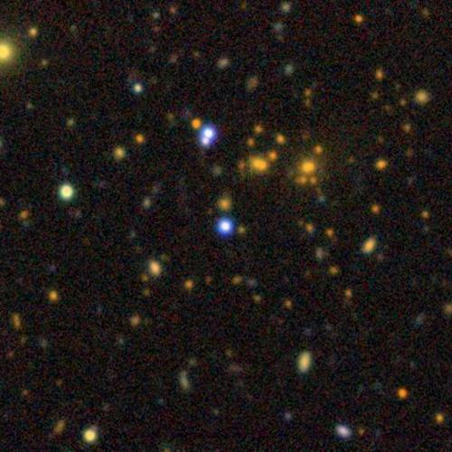
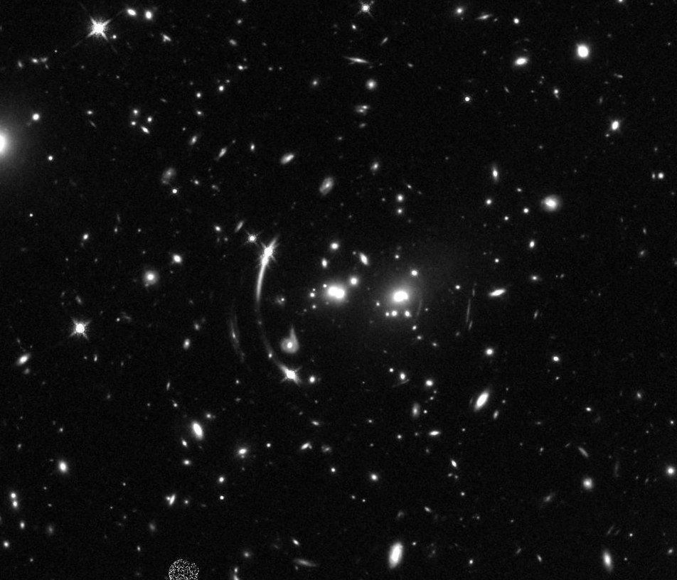
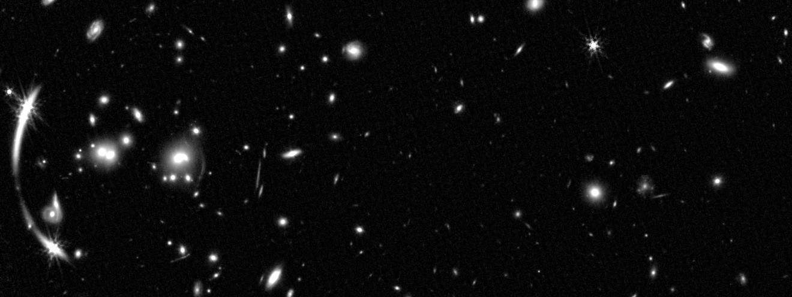
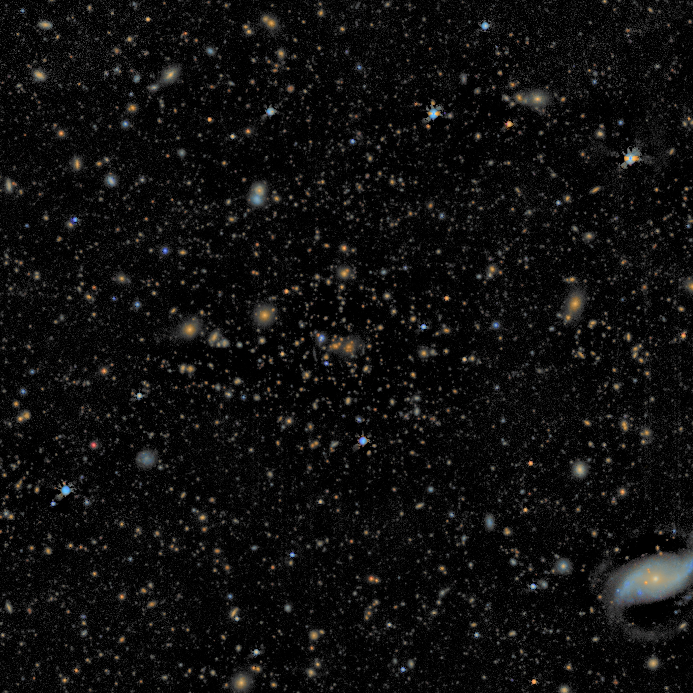
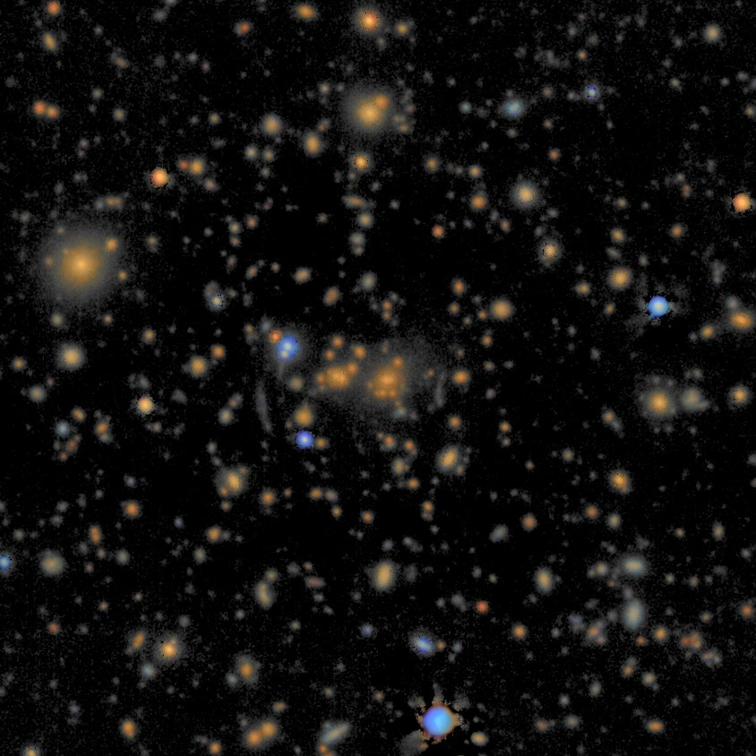

J1029+2623 — Ancillary Data

MUSE Data
Program 0102.A-0642(A) Public
FORS2 Data
Program 116.299H Proprietary until Dec 2026 – Mar 2027
This program also targets J0335-1927 and J0542-2125. The program is completed (48 / 48 h executed).
HST Data
Program 12195 Public
Understanding the largest quasar lens SDSS J1029+2623.

Program 17912 Public
Narrow-band Lyα imaging of strongly lensed quasar host galaxies.
JWST Data
Program 6675 Public
Time-delay cosmography with strong cluster lenses.

Credits to L. Pecoraro
Archival Data (> 10 yr)
Older programs, observed more than 10 years ago (ordered by wavelength).
| Telescope / Instrument | Program (PI) | Data | Date | Archive |
|---|---|---|---|---|
| Subaru / Suprime-Cam | — | g, r, i imaging | Jan 2008 | SMOKA Search |
| HST / WFPC2 | 11289 (Kneib, SL2S) | F606W imaging | Nov 2008 | MAST HST Search |
| Gemini-N / GMOS | GN-2010A-C-4 (Oguri) | Multi-object spectroscopy (R150) + i imaging | Mar 2010 | Gemini Archive (GN-2010A-C-4) |
| Gemini-N / GMOS | GN-2015A-C-2 (Wilson) | Multi-object spectroscopy (R400) | Feb 2015 | Gemini Archive (GN-2015A-C-2) |
Survey Coverage
Wide-field optical/NIR surveys that cover this target, with the available bands (catalogue detections within 30″ or survey images).
DESI Legacy Surveys DR10g r i z
Pan-STARRS1g r i z y
SDSSu g r i z
UKIRT UHS DR3J H K
Gaia DR3G, BP, RP
Spectroscopy: SDSS spectrum (2006) and BOSS spectra (2013–2018). SDSS SkyServer
Color Image
u g r i z color image of the field; click to enlarge.


1′

30″